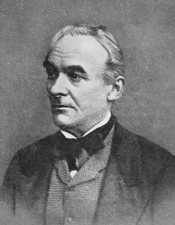
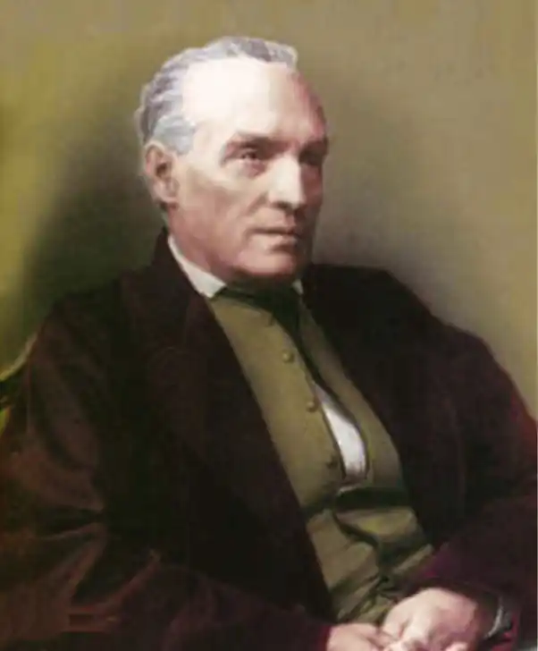

МЕРІМЕ, Проспер (Мerimee, Prosper — 28.09. 1803, Париж — 23.09. 1870, Канни) — французький письменник.Меріме народився у Парижі, в сім'ї художника, послідовника Ж. Л. Давида, чий по-класицистичному суворий, лапідарний стиль справив неабиякий вплив на юнака. Не менший вплив справив на нього й передромантичний стиль "Пісень Оссіана"; зазнав він і нетривалого захоплення руссоїзмом. Ідеалом Меріме став В. Шекспір. Дружба зі Стендалем (від літа 1822 p.), ознайомлення з його трактатом "Расін і Шекспір" (1823—1825), відвідування літературного гуртка Делеклюза, де панував культ В. Шекспіра, ще більше посилили схиляння Меріме перед великим драматургом. У ці ж роки формуються політичні погляди письменника. Він був тісно пов'язаний з "доктринерами" — невеликою, але впливовою партією ліберального штибу, яка брала участь у підготовці Липневої революції 1830 р. і повалила режим Реставрації. Після революції Меріме отримав нагороди, посади у різних міністерствах. Найбільше значення мала його діяльність в якості інспектора історичних пам'яток, збереженню яких він віддав багато сил і енергії. Одначе скандал, що вибухнув у зв'язку з публікацією новели "Арсена Гійо "наступного дня після обрання Меріме у Французьку академію (1844), свідчив про те, що злиття політичних поглядів письменника, його соціальної позиції з офіційною ідеологією так і не відбулося. У липні 1848 p. Меріме брав участь у придушенні повстання паризьких робітників. Суперечливість його поглядів, що наростала в період Липневої монархії, поглиблюється. Письменник негативно поставився до перевороту, здійсненого у 1851 р. Луї Наполеоном Бонапартом, але опинився у складному становищі: Бонапарт, котрий проголосив себе імператором Наполеоном III, одружився з дочкою близької подруги Меріме. На письменника посипалися милості двору, його призначили сенатором. Зовнішній добробут спричинив духовну кризу, ознаменовану майже повним припиненням художньої творчості.
Періодизація творчості Меріме визначається двома історичними подіями: Липневою революцією 1830 р. та революційними подіями 1848 р., при цьому зміни обставин життя, політичних, соціальних поглядів координуються з перебудовою системи жанрів, розвитком художнього методу, еволюцією проблематики, стилю.
Успіх прийшов до Меріме з публікацією його першої книги — "Театр Клари Гасуль" ("Theatre de Clara Gazul", 1825). Вдавшись до містифікації, письменник видав збірку написаних ним п'єс за твори іспанської актриси. Прагнучи до експерименту з різними точками зору, він подвоює містифікацію, ввівши образ перекладача Жозефа Л'Естранжа, котрий коментує п'єси Клари Гасуль. Містифікація не мала на меті приховати ім'я автора. У деяких екземплярах книги був уміщений портрет М. у костюмі іспанки, багатьом було відомо, хто є автором п'єс. Використовуючи досвід іспанських драматургів XVII-XVIII ст., М. ніби вдавався до "жанрової гри", руйнував непорушність традиційної структури класицистичних творів. Дуже сміливими були п'єси й за змістом. М. прямо заявив про свої атеїстичні, антиклерикальні погляди, хоча 1825 р. у Франції було прийнято реакційний закон про святотатство, що загрожував противникам церкви смертною карою Немає пошани до церковників ні в Л'Естранжа. котрий оповідає біографію Клари Гасуль, ні в неї самої, сміливої, незалежної жінки. У комедії "Жінка-диявол, або Спокуса святого Антонія" ("Une femme est un diable, ou La Tentation de saint Antoine") інквізитори звинувачують дівчину Марікіту у зв'язках з нечистою силою. Але. охоплений пристрастю до Марікіти, один із інквізиторів, Антоніо, вбиває свого побратима та суперника в коханні Рафаеля. Земне торжествує над небесним. Утім, кохання зображається не в романтично піднесених тонах, а гротесково, як "африканська пристрасть", що спричинює вбивства, після яких слуга може сказати: "Пане! Вечеря подана і виставу закінчено" ("Африканське кохання" — "L'amour africain"). Автор на боці народів, які борються проти французького панування ("Іспанці в Данії" — "Les Espagnols er, Danemark"). Питання про права народів, переростаючи рамки "місцевого колориту", займе помітне місце у творах Меріме. У 1828 p. Меріме написав "Жакерію" ("Jacquerie") та "Родину Карвахаля" ("La famille de Carvajal"). Ці дві "драми для читання" дуже різні. У першій подається масштабне, не скуте умовностями французької сцени зображення повстання французьких селян у XIV ст., яке отримало назву Жакерія. Меріме долає романтичне розуміння шекспірізації, одним із перших розробляє реалістичні основи драматургії. В другій — доведений до абсурду мелодраматичний сюжет, що розгортається на умовному тлі екзотичної іспанської Америки. Тут є кинджал і отрута, спроба інцесту і батьковбивство, але все це — в іронічному тоні. Насмішка над мелодраматизацією, запозиченою від передромантиків романтичними драматургами, ніби доповнює нову концепцію драми, яку Меріме втілив у "Жакерії". Тому видання 1828 р., до якого ввійшли обидві п'єси, слід розглядати як свідому спробу з двох різнопланових творів зробити цілісну книгу — знаряддя в боротьбі супроти відмираючих літературних традицій і штампів, за нову драматургію великого дихання, драматургію реалістичної орієнтації. Жанр "драми для читання" дозволив Меріме у "Жакерії" набагато випередити драматургів, котрі писали для театру, у звільненні від умовностей, у розкритті справжніх механізмів, що керують історичним процесом та діями окремих особистостей. Меріме нікого не ідеалізує — ні вельможних феодалів, як це було заведено в класицистичних трагедіях, ні злидарів, ізгоїв на кшталт романтиків. Так, жорстокий барон Жільбер д'Апремон у сцені загибелі виявляє певне благородство, що викликає співчуття. Його донька Ізабелла, котра здається ідеальним, неземним створінням, не позбавлена аристократичного гонору. Історія Ізабелли завершується її цілковитим приниженням: вона змушена, згідно з власним уявленням про феодальну честь, просити Сізарда, котрий знеславив її, одружитися з нею. Немає у Меріме і по-романтичному шляхетних розбійників. Отаман злодійської ватаги Перевертень за всієї його сміливості та винахідливості цілковито позбавлений етичного начала. Полишивши загін у небезпечну для повстанців хвилину, він тим самим прирікає їх на остаточну поразку та загибель. Образ П'єра, закоханого в Ізабеллу, особливо підійшов би для втілення в ньому романтичного ідеального героя: виходець із низів, він збагнув душу поезії, любить свою прекрасну пані, він хоробрий, благородний, здатний на подвиг в ім'я любові. Та, взявши участь у повстанні, він виявляється ненадійним союзником селян і врешті-решт йде на відверту зраду їхніх інтересів, влаштовуючи втечу Жільбера, Ізабелли та інших феодалів із обложеного замку. Подібно до Жільбера, Ізабелли, Перевертня, П'єра, інші герої теж змінюють характер своєї поведінки, іноді по декілька разів, і залежно від цього змінюється їхня оцінка у сприйнятті читача. У цій зміні немає авторського суб'єктивізму. Діями героїв керують соціальні обставини в їхній історичній динаміці та соціальна психологія персонажів. Тут виявляється нова — реалістична — настанова Меріме у зображенні суспільства й особистості. Звідси й нові принципи побудови сюжету: не доля окремої особистості, родини чи пари закоханих, а історія виникнення, розвитку, кульмінації та загибелі повстання — ось основа сюжету. По-новому трактує Меріме і особистість вождя повстання. Ним стає священик брат Жан, чий характер, вольовий і лукавий, дратівливий і енергійний, глибоко розроблений драматургом. Брат Жан не схожий на романтичного героя, котрий вивищується над пасивним натовпом, він виражає народні інтереси в момент висхідного розвитку повстання та втрачає порозуміння із селянами в період розгрому Жакерії, і від цього залежить уся його особиста доля. Письменник надає побудові своїх п'єс більшої гнучкості та різноманітності, аніж це було властиве драматургії попередніх періодів. Меріме широко використовує принцип вільної композиції, виражений у множинності точок зору, зруйнуванні стрункості умовної архітектоніки класицистичної драми, діалектичному поєднанні завершеності та незавершеності і т. д. Однак найзначнішим відкриттям Меріме є встановлення безпосередньої координації між будовою художнього твору і розвитком дійсності, яка стає предметом зображення у драмі. Побудова "Жакерії" найбільшою мірою відображає прагнення Меріме до безособовості, об'єктивності творчості. Письменник намагається створити враження, що не автор, а саме життя визначає будову твору. У1827 р. вийшла друком книга "Ґюзла" ("Guzla") без зазначення автора. Імітація південнослов'янської поезії, зібраної та перекладеної французькою мовою анонімним фольклористом, була виконана настільки старанно, що містифікацію розкрили одиниці (серед них — Й. В. Гете), а пародійний характер — лише фольклористи, приміром, К.Форіель, чиї принципи видання та коментування народних пісень Меріме іронічно імітував. До книги ввійшло близько трьох десятків пісень, фрагментів, нотаток, з них декілька приписані народному співцеві Іакінфу Маглановичу, чий колоритний образ, що запам'ятовується, змальований в поданій на початку книги замітці про нього. Це, сказати б, новий, сербський Оссіан, як його й сприйняли читачі. У передмові до видання "Ґюзли" 1840 p. Меріме вдався до нової містифікації, представивши роботу над книгою як сущу дрібницю, з корисливою метою отримати гроші на реальну подорож країнами Адріатики, як данину романтизмові з його вимогою "місцевого колориту". Проте в майстерно скомпонованій автором мозаїці помітно проступає прагнення до "жанрової гри", іронія над романтичною фрагментарністю. Є в композиції "Ґюзли " й прихована спрямованість: від вільної фантазії в історії життя неіснуючого співця, що відкриває книгу, до близької фольклорним першоджерелам пісні "Кінь Хоми II" ("Le cheval de Thomas II") і до введених згодом дійсних перекладів сербських пісень, тобто від містифікації, гри через іронію стосовно романтиків, які шукають у фольклорі або "простоту", або жахи про упирів і т. д.,— до справжніх народних джерел. І тоді стає очевидною щирість інтересу Меріме до дикуватої манери виконання іллірійських пісень ("Замітка про Іакінфа Маглановича" — "Notice sur Hyacinthe Maglanovich"), до історії слов'ян ("Смерть Хоми II, короля Боснії" — "La mort de Thomas II, roi de Bosnie"), їхніх звичаїв і повір'їв ("Погребна пісня" — "Chant de mort", "Красуня Єлена" — "La belle Helene"), їхньої волелюбності ("Чорногорці" — "Les Montenegrins").